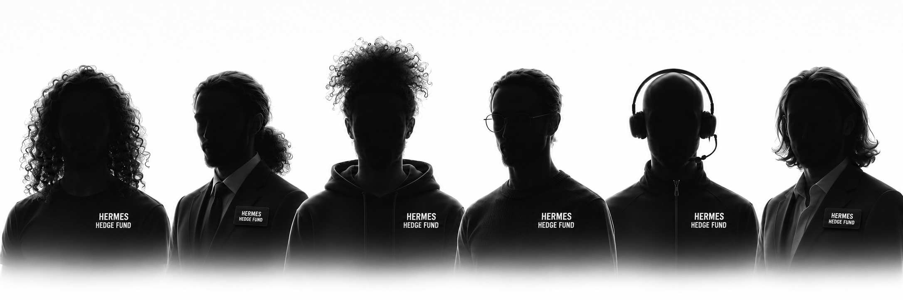

Личный хедж-фонд
За три недели в Академии Биржевика вы научитесь разбирать отчёт компании и понимать, что изменилось в инвестиционной идее. Соберёте два индикатора TradingView по методике Биржевика и разберёте его реверсный хедж на своём дашборде.
Открыть программу →Скачать PDF
Индикаторы по методике Биржевика
Устанавливаем помощника, подключаем Parallel, TradingView и брокерские данные. Проверяем каждое подключение на учебном примере.
Индикаторы и портфель
Создаём два индикатора TradingView по согласованным правилам Михалыча. Собираем дашборд его сделок и портфеля с расчётом рисков.
Содержание презентации
- Что вы сможете через три недели
- Собираем своего помощника трейдера
- Выбираем модель для Hermes
- Подключаем Parallel.ai
- Что изменил новый отчёт?
- Подключаем TradingView к Hermes
- Разбираем историю своего счёта
- Как Hermes получает данные брокера
- Откуда взялся мой результат?
- Воссоздаём график Михалыча
- Собираем первый индикатор в Pine
- Как понять, что линии построены верно?
- Реверсный хедж на графике
- Проверяем правило на скрытом продолжении
- Реверсный хедж по шагам
- Реверсный хедж в дашборде
- Собираем экран портфеля из журнала
- Добавляем исполнение и сверяем остатки
- Сколько риска осталось после хеджа?
- Сравниваем три решения на одних ценах
- Получаем сводку в Telegram
- Самостоятельный разбор реверсного хеджа
← → или свайп — слайды · H2.0 / N — заметки · ◐ — тема